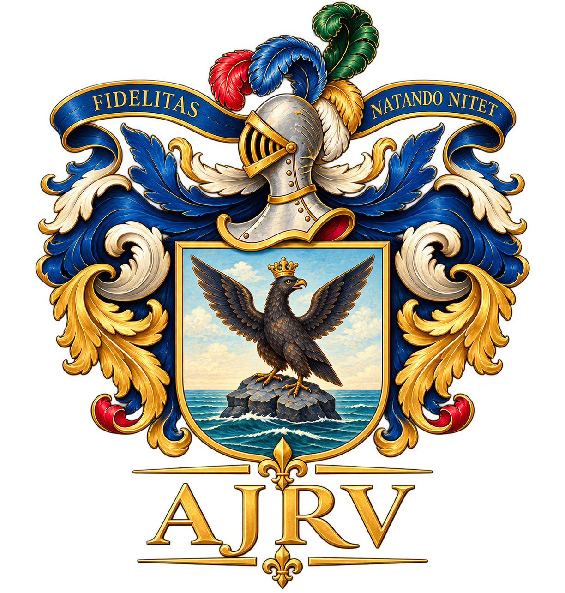
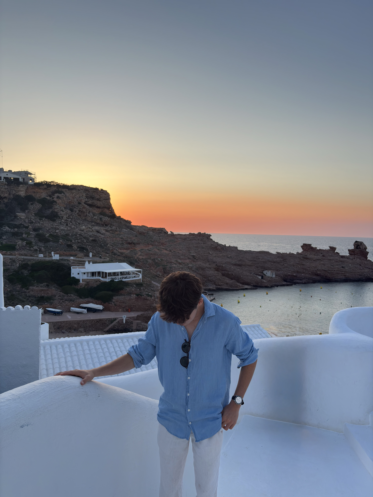

Estudiante interesado en la economía y las relaciones internacionales.

Actualmente curso primero de Bachillerato, una etapa fundamental para mi formación académica y personal. Mis principales intereses se centran en la economía, las relaciones internacionales, la política y el mundo empresarial.
Me interesa especialmente comprender el funcionamiento de los mercados financieros, las empresas y las instituciones internacionales. Mi objetivo es estudiar Administración y Dirección de Empresas y Relaciones Internacionales en la universidad, con la intención de desarrollar una carrera profesional de carácter internacional.
Durante varios años he practicado piragüismo, un deporte que ha formado una parte importante de mi vida. Esta experiencia me ha permitido desarrollar valores como la disciplina, la constancia, la responsabilidad y la capacidad de superación.
Los entrenamientos y la práctica deportiva me han enseñado la importancia del esfuerzo, la organización y el trabajo en equipo. Aunque actualmente estoy centrado en mis estudios y proyectos personales, considero que mi etapa como piragüista ha contribuido de manera significativa a mi desarrollo personal.
Desde 2024 participo en programas de inmersión lingüística en el Reino Unido como estudiante de Delta Idiomas. Estas experiencias me permiten mejorar mis conocimientos de inglés y conocer de primera mano la cultura, las costumbres y la sociedad británica.
He realizado estancias internacionales en Hull (2024), Brighton (2025) y Norwich (2026), visitando también otras ciudades históricas del Reino Unido. Estos programas han contribuido a desarrollar mi autonomía, mi capacidad de adaptación y mi interés por las relaciones internacionales y el aprendizaje de idiomas.
Conoce un poco más sobre mi trayectoria, mis intereses y mis objetivos.
Mi nombre es Antonio Jaime Roca Vidal. Soy de Menorca, Islas Baleares, y actualmente curso primero de Bachillerato en el IES Joan Ramis i Ramis.
Me considero una persona curiosa, con interés por aprender y comprender el mundo que me rodea. Dedico una parte importante de mi tiempo a mi formación académica, al aprendizaje de idiomas y al desarrollo de proyectos personales.
Entre mis principales intereses destacan la economía, la política, la historia, las relaciones internacionales y el funcionamiento de las instituciones europeas.
También me interesa especialmente el mundo empresarial y financiero, así como la historia de las monarquías europeas. Disfruto viajando, descubriendo nuevas ciudades, conociendo otras culturas y ampliando mis conocimientos sobre diferentes países.
Mi principal objetivo académico es continuar mis estudios universitarios en Administración y Dirección de Empresas y Relaciones Internacionales, preferentemente en Madrid.
A largo plazo, me gustaría desarrollar una carrera profesional internacional, especialmente en el ámbito financiero y empresarial, con Suiza como uno de mis principales destinos profesionales. También quiero seguir perfeccionando mi inglés y aprendiendo otros idiomas.
Una selección de mis proyectos y experiencias.